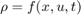
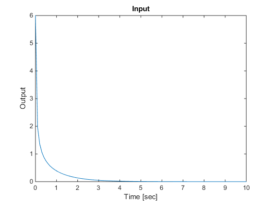
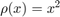
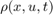

Simulating Quasi-LPV Systems
Contents
Introduction
LPVTools provides command line simulation tools that enable simulation of quasi-LPV systems, i.e. systems in which one of the states is also the scheduling parameter. An accurate simulation of a quasi-LPV system requires that the parameter trajectory during simulation is a function of the system state. This is achieved using Function Handles.
The syntax for LPV simulations is:
lpvlsim(G,PTRAJ,UIN,TIN,X0)
where G is the system to be simulated, PTRAJ is a structure that defines the parameter trajectory, UIN is the input to the system, TIN a vector of simulation time values, and X0 is the initial value of the system.
The LPV simulation command requires the user to specify the parameter trajectory in the structure PTRAJ. To use function handles to specify the parameter trajectory, PTRAJ must be specified as a structure with the field \|PTRAJ.Functions| that specifies function handles for evaluating the parameters . A second field PTRAJ.Names provides a cell array list of the parameter names corresponding to each function handle. The following code provides an example demonstrating the simulation of a simple nonlinear system using the quasi-LPV command line simulation approach:
Example
Create system xdot = -(1+rho)x + u; y = x;
rho = pgrid('rho',linspace(0,50,100));
sys = ss(-1-rho,1,1,0)
PSS with 1 States, 1 Outputs, 1 Inputs, Continuous System. The PSS consists of the following blocks: rho: Gridded real, 100 points in [0,50], rate bounds [-Inf,Inf].
Make rho(x,u,t) = x^2 Nonlinear system is xdot = -x - x^3 + u
pFHN.Functions = @(x,u,t) x^2;
pFHN.Names = {'rho'}
pFHN =
Functions: @(x,u,t)x^2
Names: {'rho'}
Simulate from initial condition x0=6; u=0 Response starts very fast (xdot = -37*x), becomes slow (xdot = -x)
Nt=100; tVec = linspace(0,10,Nt); uVec = zeros(Nt,1); x0 = 6; lpvlsim(sys,pFHN,uVec,tVec,x0);
The plot shows the response generated for this quasi-LPV example. It is important to emphasize that this simulation captures the nonlinear dependence . Hence this function-handle approach enables simulation of nonlinear systems represented in the quasi-LPV form. The functions lpvstep, lpvimpulse, and lpvinitial were also extended to allow for quasi-LPV simulations.
It should be noted that the Simulink blocks in LPVTools naturally allow for quasi-LPV simulations  because the parameter trajectory at the ``Parameter'' input port can be generated via Simulink blocks operating on any signal in the model.